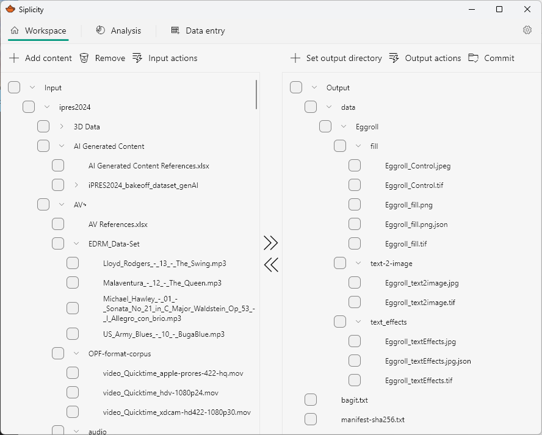

A digital preservation triage tool
Profile, analyse, select, structure, describe, and package digital files for ingest into a digital repository.
Features
- Format identification
- Duplicate detection
- Checksum calculation and verification
- Metadata import
- Pattern based file renaming
- Pattern based filtering and file selection
- Output standards compliant metadata and packages
- Audit logs
- Client-server architecture for local and cloud deployment

Get in touch
Siplicity is in active development. I’m planning for a launch in early 2025.
If you’d like to be involved in beta testing, have a use case, or a question, please drop me a line at richard.lehane@gmail.com